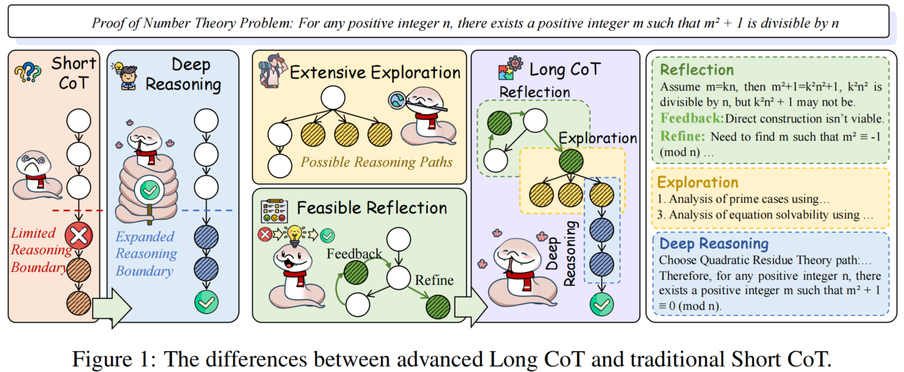

覃立波Libo Qin
副教授 · 博士生导师
哈尔滨工业大学（深圳）计算机科学与技术学院
qinlibo [at] hit.edu.cn

个人简介
覃立波，哈尔滨工业大学（深圳）计算机科学与技术学院 / 计算与智能研究院副教授、博士生导师、小米青年学者。现任中国中文信息学会青工委秘书长。主要研究兴趣为自然语言处理、大模型推理、大模型智能体等，在人工智能及自然语言处理等领域国际期刊 / 会议 TPAMI、NeurIPS、ICLR、ICML、ACL 上发表论文多篇。
研究成果曾入选 Paper Digest 高影响力论文，并获得世界人工智能大会青年优秀论文提名和 EMNLP 2022 MMNLU Workshop 最佳论文奖。入选中国科协青年人才托举工程、斯坦福“全球前 2% 顶尖科学家”榜单、首届字节跳动奖学金、全球 AI 华人百强新星等。长期担任 NeurIPS、ICLR、ACL、EMNLP 等国际会议（高级）领域主席。（协助）指导多名学生获得中国科协青年科技人才培育工程博士生专项计划、CCF 优秀大学生、国家奖学金、港府奖学金等。
加入我们
要求与支持
招生要求
- 具备较强自驱力，能主动推进研究工作。
- 对科研有稳定、持续的兴趣，愿意投入长期训练。
- 不建议仅以获得学位为唯一目标的申请者联系。
培养支持（表现优异者）
- 优先保留本组推荐免试硕博、申请考核制博士名额。
- 推荐至字节跳动、腾讯、阿里巴巴、华为等企业实习机会。
- 推荐至新加坡、美国、加拿大等高校读博机会。
学生指导（部分）


学生近期荣誉
出版译著

从零构建大模型
围绕大语言模型的核心机制与工程实现，从文本处理、注意力机制、模型训练到微调实践逐步展开，适合希望通过动手从零实现理解 LLM 原理与工作流程的初学者。

自然语言处理：基于机器学习视角
从机器学习视角系统梳理现代自然语言处理方法，覆盖基础建模、表示学习、深度学习与预训练范式，适合作为对自然语言领域感兴趣的本科高年级、研究生课程及科研入门参考。
部分发表论文

Towards Reasoning Era: A Survey of Long Chain-of-Thought for Reasoning Large Language Models.

CCHall: A Novel Benchmark for Joint Cross-Lingual and Cross-Modal Hallucinations Detection in Large Language Models.

What are the essential factors in crafting effective long context multi-hop instruction datasets? Insights and best practices.

CoMT: A Novel Benchmark for Chain of Multi-modal Thought on Large Vision-Language Models.